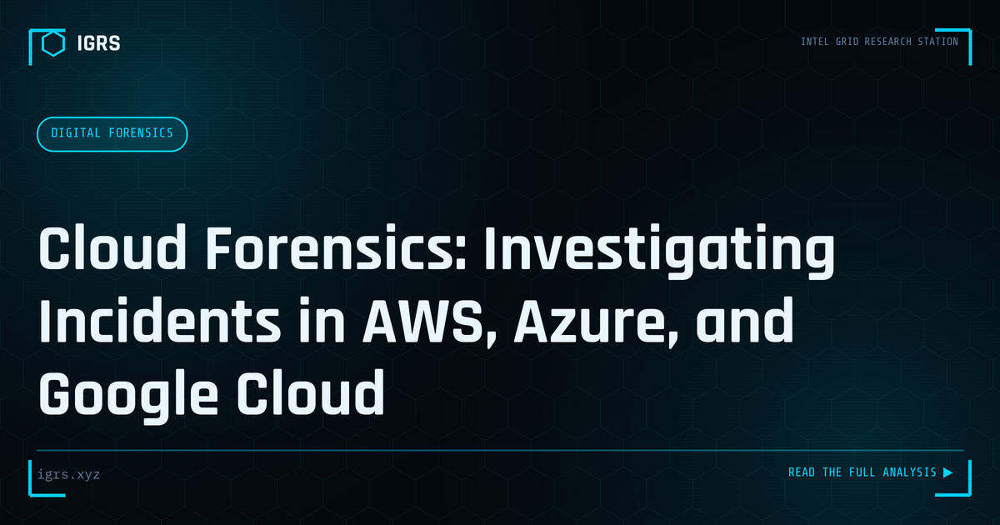

Cloud Forensics: Investigating Incidents in AWS, Azure, and Google Cloud
| File No. | IGRS-037/2026 |
| Subject | Practical guide to cloud forensic investigation — log sources, preservation, and legal process |
| Category | Digital Forensics |
| Author | Manuj Kumar Pandey |
| Published | 2026-06-08 |
| Reading time | 12 minutes |
More Indian organizations are hosting critical systems in the cloud. When incidents occur there, traditional forensic approaches do not work. What does.
Cloud Forensics: Investigating the Borderless Environment
As organisations migrate to AWS, Azure, and Google Cloud, evidence increasingly lives in the cloud rather than on physical devices. Cloud forensics — applying digital forensic techniques to cloud environments — has become essential for modern investigation. But the cloud introduces unique challenges: multi-tenancy, distributed data, jurisdictional complexity, and provider dependency. This guide covers cloud forensics methodology and its application.
How Cloud Forensics Differs
Traditional forensics assumes physical access to a device you can image and analyse. Cloud forensics often has none of this — data resides on infrastructure you do not control, may be spread across data centres in multiple countries, and is accessed through provider APIs and logs rather than direct disk access. This fundamental difference reshapes the entire investigative approach.
Sources of Cloud Evidence
| Source | Evidence |
|---|---|
| CloudTrail (AWS) | API calls, account activity |
| Azure Activity Log | Resource and management operations |
| VPC/NSG flow logs | Network traffic metadata |
| Storage access logs | S3/Blob access records |
| IAM logs | Authentication and authorisation |
| Snapshots | Point-in-time disk images |
AWS Forensics
In AWS, investigation centres on several key services. CloudTrail records API activity across the account — who did what, when, and from where. VPC Flow Logs capture network traffic metadata. EBS snapshots provide forensic disk images of instances. S3 access logs reveal data access. Collecting these, while preserving integrity through hashing and isolation, forms the core of AWS investigation.
Azure and GCP Forensics
Azure provides the Activity Log for management operations, NSG flow logs for network traffic, and disk snapshots for instances. Google Cloud offers Cloud Audit Logs, VPC Flow Logs, and persistent disk snapshots. While the specifics differ across providers, the principles are consistent: capture the audit logs, network logs, and disk state, preserving everything with proper integrity controls and chain of custody.
The Evidence Acquisition Process
Acquiring cloud evidence soundly involves several steps:
- Identify relevant resources and log sources
- Preserve logs before retention periods expire
- Create snapshots of affected instances
- Hash all acquired evidence immediately
- Isolate evidence in a secure forensic account
- Document the acquisition with timestamps and authority
The Log Retention Challenge
A critical cloud forensics challenge is log retention. Cloud logs may have limited default retention, and once gone, they cannot be recovered. This makes rapid preservation essential — and proactive logging configuration even more so. Organisations should enable comprehensive logging with adequate retention before an incident, ensuring evidence exists when investigation begins. CERT-In's 180-day retention requirement applies to cloud systems as well.
Jurisdictional Complexity
Cloud data may be stored across data centres in multiple countries, raising jurisdictional questions. Data physically located abroad may require MLAT processes to access through legal channels, which are slow. India's data localisation trends mean more Indian data stays within India, potentially simplifying access, but multinational providers may still distribute data globally. Determining where data physically resides is an essential early step in cloud investigation.
Provider Cooperation and Legal Process
| Provider | LEA Process |
|---|---|
| AWS | Law enforcement request process |
| Microsoft Azure | Microsoft legal compliance |
| Google Cloud | Google LERS |
For data the investigator cannot access directly, provider cooperation through proper legal process — Section 94 BNSS for Indian operations or MLAT for overseas data — is necessary. Major providers have established law enforcement processes for legitimate requests.
Container and Serverless Forensics
Modern cloud architectures using containers and serverless functions add complexity. Containers are ephemeral, potentially disappearing before they can be investigated, requiring logging and monitoring to capture evidence in real time. Serverless functions leave minimal traditional artifacts, making logs the primary evidence source. These architectures demand forensic readiness built into the environment, as post-incident acquisition is often impossible.
Legal Framework and Admissibility
Cloud evidence requires the same admissibility standards as other digital evidence — Section 63 BSA 2023 certification and hash verification. The challenge is establishing chain of custody for data acquired through APIs and provider cooperation rather than physical seizure. Thorough documentation of how evidence was acquired, by whom, and under what authority is essential for cloud evidence to withstand judicial scrutiny.
Building Cloud Forensics Capability
As cloud adoption accelerates in India, cloud forensics capability is increasingly essential. Developing it requires understanding each major provider's logging and evidence sources, knowing the legal pathways for data access, building forensic readiness into cloud environments through comprehensive logging, and adapting evidence handling to the cloud's distributed nature. For investigators, the cloud is not an obstacle but a different environment — one that, with the right approach, yields rich evidence through its extensive logging and API-accessible records.